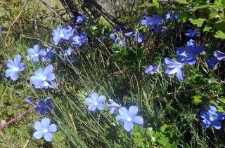
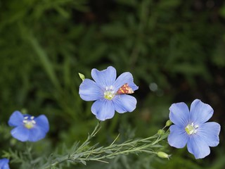
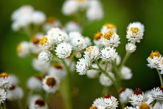
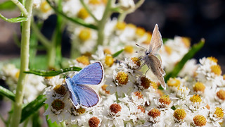
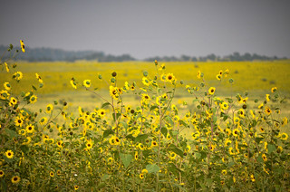

Blue Flax are a nice plant to keep around especially throughout the year. In their bloom season they are beautiful with pollen for pollinators, in their off season their pods provide seeds for birds, allowing birds to enable this flowerws survival, and when there are no seeds theri leaves can feed our herbivore friends. they like to grow in areas with plenty of sun and in rocky/well drained soil. They typically have small light blue to intense blue petals, small yellow centers, and grow in clusters that form in a central area.


Pearly Everlasting
blooms in summer


These cute flowers bloom during summer in meadows or near woodlands. They tend to grow in massive groups so it is easy to tell when you stumbled upon them. They can appear happy even in dry climates which has helped them get theri name, the pearly everlasting. They have tall stalks with many thin upward facing leaves. Their flowers have many small white petals with internal yellow petals. They make for cute pollinator friendly garden peices especially if you live in meadowy areas where it is easier for them to grow.
Sunflower
blooms in summer-fall

In true sunflower fashion you can find these just about everywhere. I have seen them growing in the cracks of sidewalks, backyards, and more typically in the mountainous plains here in colorado. Colorado Sunflowers typically have much smaller flowers and thinner stalks. Especially compared to the ones in Kansas I was used to. Kanses sunflowers are massive and taller than most people. Thanks to the resiliance of colorado sunflowers these make excellent little effort garden flowers.